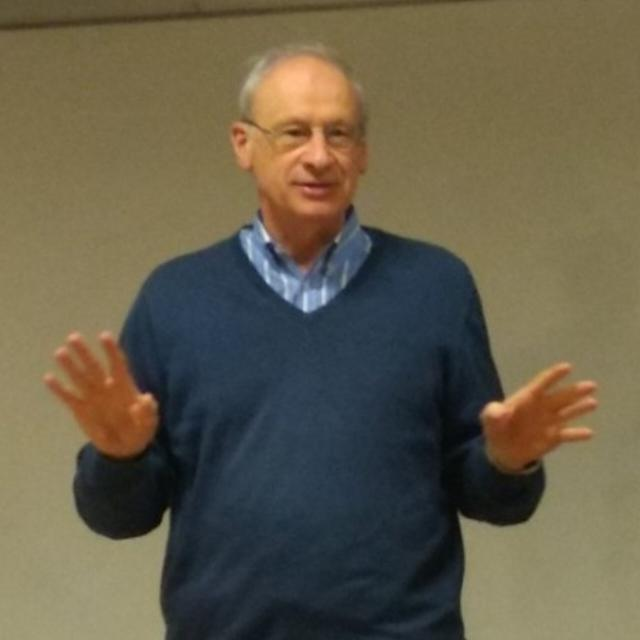

Un centro de referencia que aporta al Desarrollo Sostenible en la
región de Cuyo. Gestión, docencia, investigación, extensión y
consultoría, con la misma jerarquía: transversalidad universitaria
y compromiso con el bien común.
El Instituto de Desarrollo Sostenible (IDS) depende de la Facultad de
Ciencias Económicas y Empresariales de la Universidad Católica de Cuyo.
Su objeto es el desarrollo de investigaciones transversales sobre
desarrollo sostenible, desde un enfoque interdisciplinario, con
orientación a la investigación, la docencia, la divulgación, la
extensión y la consultoría a organizaciones gubernamentales y no
gubernamentales.
Su principal aporte es el estudio del desarrollo desde una visión de
sostenibilidad ambiental, económica y social, articulando el
conocimiento académico con las necesidades reales de la región de Cuyo.

Fundador
Mg. Carlos Pujadas
En 2006, el Mg. Carlos Pujadas fundó el Instituto de Desarrollo
Sostenible (IDS), impulsado por la convicción de que la Universidad
tiene una responsabilidad ineludible: comprometerse activamente con
la sostenibilidad y formar profesionales capaces de transformar esa
visión en acción.
Arquitecto por la Universidad de Buenos Aires y Magíster en
Docencia y Gestión Universitaria por la Universidad de Mendoza,
Carlos dedicó su carrera académica a tender puentes entre la
investigación, la docencia y el compromiso social. Como profesor y
referente en gestión ambiental sostenible, supo ver —mucho antes de
que fuera agenda global— que el desarrollo sostenible no podía
quedar fuera de la misión universitaria.
Su legado más visible no está solo en las publicaciones o los
programas que impulsó, sino en las personas: los jóvenes
investigadores que formó bajo sus valores hoy ocupan roles de
liderazgo en distintos ámbitos de la sociedad, llevando adelante su
visión de una universidad comprometida con el futuro del planeta.
Misión
Centro de investigación, docencia y extensión del desarrollo
sostenible que trabaja, desde el ámbito regional, en las
problemáticas globales, promoviendo el bien común y la dignidad
de la persona humana.
Visión
Centro de referencia que aporta al Desarrollo Sostenible en la
región de Cuyo, con tres características: vanguardia del
conocimiento; asociación a centros nacionales e internacionales;
y credibilidad para todos los actores sociales.
Valores institucionales
Valoración de la persona humana. Valoramos la
dignidad de la persona humana generando un ámbito donde se
respeten y se promuevan sus derechos.
Integridad. Obramos de modo transparente, honesto
y coherente con la misión y la visión del IDS.
Responsabilidad. Actuamos comprometidos con la
sociedad, respondiendo a las necesidades del desarrollo
sostenible y sirviendo al bien común.
Compromiso. Promovemos una actitud positiva y
responsable para el logro de los objetivos comunes, con sentido
de pertenencia al Instituto.
Trabajo en equipo. Trabajamos de modo
colaborativo, respetando la opinión de los demás y fomentando la
interdisciplinariedad.
Aprender y emprender. Creamos un ambiente de
aprendizaje para emprender soluciones creativas e innovadoras.
«Comprometidos con el Desarrollo Sostenible, desde la región de Cuyo
hacia el mundo.»
Marco institucional
Historia y normativa
El IDS se insertó en la Facultad de Ciencias Económicas y Empresariales
por decisión del Consejo Superior y cuenta con reglamento interno
aprobado por el Consejo Directivo de la Facultad.
Resolución Nº 691-CS-2007
El Consejo Superior de la UCCuyo insertó el Instituto de
Desarrollo Sostenible en la estructura de la Facultad de
Ciencias Económicas y Empresariales. La transferencia, con la
totalidad de su estructura en recursos humanos, rige a partir
del 19 de octubre de 2007. El Arq. Carlos Pujadas, entonces
Secretario General Académico y director del Instituto, fue
relevado de esas funciones para dedicarse de manera exclusiva
a la dirección del IDS. Dada en San Juan el 27 de octubre de
2007, con la firma de la Rectora María Isabel Larrauri.
Resolución Nº 01/15 — FCEyE
El Consejo Directivo de la Facultad de Ciencias Económicas y
Empresariales aprobó el reglamento del Instituto de Desarrollo
Sostenible (Anexo I). Dada en San Juan el 28 de abril de 2015,
con las firmas de Ana María Lillo (Secretaria Académica) y
Leonardo David Saball (Decano).
Reglamento interno del IDS
Define objetivos, misión, visión y valores; la dependencia
directa del Decano de la FCEyE; la estructura dinámica
(dirección, docentes e investigadores, posibilidad de
investigadores externos); el financiamiento por la Facultad y
fuentes externas; la difusión científica —incluida la revista
digital con evaluación externa—; y las obligaciones de quienes
investigan. Toda situación no prevista la resuelve el Consejo
Directivo de la Facultad.
Doctora en Economía y Derecho (Universidad Internacional de Catalunya).
Becaria posdoctoral CONICET. Categoría I — Investigador Superior.
Editora de la Revista del IDS.
Mg. María Paula Pérez Armendariz
RSE en empresas mineras y servicios mineros.
Mg. Daniela Gámez Figueroa
Gobernanza, políticas públicas y Agenda 2030.
Lic. Natalia Suárez
Economía y sectores productivos sostenibles.
Cdra. María Belén Cañizares
RSE y sustentabilidad organizacional.
Mg. Horacio Matías Amarfil Echegaray
Educación para el desarrollo sostenible.
Mg. Teresa Arias Márquez
Innovación, tecnología e IA para el desarrollo sostenible.
Lic. Renzo Quiroga
Economía circular y modelos de producción sostenible.
Convenios
Gestión
La gestión del IDS se expresa en convenios, adhesiones y
instrumentos que articulan universidad, Estado y organizaciones.
Red de Universidades Argentinas por los ODS
9 de octubre de 2023: adhesión a la red de universidades
argentinas por la implementación de los ODS, en Córdoba.
Diplomatura en RSE
Junio 2024: convenio entre la UNSJ, el Gobierno de la Provincia
de San Juan y la UCCuyo para la Diplomatura en RSE, promovida
por la Mesa de Responsabilidad Social Empresarial.
Revista del IDS
Octubre 2024: reedición de la Revista del Instituto de
Desarrollo Sostenible, con 5 artículos científicos, reseña de
un libro y trabajos de estudiantes de la Semana Latinoamericana
de la Red de Universidades Católicas. Invitación a la editorial
a PhD. Frederic Marimon. Editora: PhD. Belén Arias. El IDS
cuenta con 20 revisores externos, referentes mundiales de
sostenibilidad.
Convenio L&G SRL
Noviembre 2024: convenio con L&G SRL para el acompañamiento
en la implementación de la sostenibilidad en la empresa.
Ministerio de Minería
Marzo 2025: convenio con el Ministerio de Minería para
desarrollar una matriz de indicadores de sostenibilidad para el
sector.
Producción científica
Investigación
El reglamento del IDS establece como objetivo diseñar estrategias de
desarrollo local considerando la sostenibilidad ambiental, social y
económica, mediante investigación aplicada, congresos, comisiones,
publicaciones y una revista propia.
Líneas de investigación
Educación para el Desarrollo Sostenible
Integración de la sostenibilidad en currículas universitarias,
formación de competencias en ODS y pedagogías para la ciudadanía
ambiental.
Contabilidad Ambiental y Social
Medición y reporte del impacto ambiental y social de las
organizaciones, indicadores de triple impacto y estados contables
socioambientales.
Sostenibilidad Universitaria
Gestión ambiental de campus, huella de carbono institucional y
políticas de sostenibilidad en la gestión universitaria.
Responsabilidad Social Empresarial y Sustentabilidad Organizacional
Estrategias de RSE, gobernanza corporativa sostenible y su impacto
en comunidades y stakeholders.
Innovación, Tecnología e Inteligencia Artificial para el Desarrollo Sostenible
Uso de IA y tecnologías emergentes para monitoreo ambiental,
eficiencia de recursos y toma de decisiones sostenibles.
Economía y Sectores Productivos Sostenibles
Modelos productivos de bajo impacto en agro, industria y energía,
y su viabilidad económica.
Gobernanza, Políticas Públicas y Agenda 2030
Diseño e implementación de políticas públicas alineadas a los ODS,
articulación entre Estado, empresa y sociedad civil.
Economía Circular y Modelos de Producción Sostenible
Reducción, reutilización y reciclaje de recursos; diseño de
cadenas de valor circulares.
Finanzas Sostenibles
Inversión de impacto, bonos verdes/sociales y criterios ESG en la
toma de decisiones financieras.
Proyectos 2026
EcoHuella UCCuyo
Medición, educación y transferencia tecnológica para la
sostenibilidad personal en clave Laudato Si’. Proyecto
aplicado de innovación, 12 meses.
Directora: PhD. María Belén Arias Valle.
Equipo: Cdra. María Belén Cañizares, Mg. María Paula Pérez
Armendariz, Lic. Renzo Martín y estudiantes de la Tecnicatura en
Software.
ODS 4
ODS 11
ODS 12
ODS 13
Producto previsto: aplicación móvil gratuita con gamificación,
cálculo de huella ecológica y recomendaciones por nivel educativo.
Del Balance Social a la información sobre sostenibilidad
Análisis comparado de la transición normativa RT 36/44 → RT 60
en Argentina. Área: contabilidad y sostenibilidad. 12 meses.
Directora: PhD. María Belén Arias Valle.
Codirectora: Cdra. María Belén Cañizares.
Equipo: Contadora Stefania Young y estudiantes avanzados de
Contador Público.
La RT 60 (aprobada en 2025) deroga las RT 36 y 44, es
obligatoria desde el 1 de enero de 2027 y exige estándares GRI y
NIIF S1/S2 del ISSB.
Evaluación del impacto de las cátedras de sostenibilidad en el
aprendizaje y la intención comportamental
Modelo de ecuaciones estructurales (PLS-SEM) en el marco del
Programa Educar para el Desarrollo Sostenible.
Directora: María Belén Arias Valle.
Codirector: Frederic Marimon.
Equipo: María Paula Pérez Armendariz, Daniela Fabiana Gámez
Figueroa, Natalia Suárez, María Belén Cañizares y Stefanía Young.
Programas de formación integral 2024–2028
Educar para el desarrollo sostenible
Programa del IDS y la Escuela de Cultura Religiosa y Pastoral.
Directora: Arias Valle, María Belén.
Codirector: Amarfil, Horacio.
Línea 2022–2025
Año
Proyecto
2025
Mapa de situación de la implementación de prácticas
sostenibles en PyMEs de San Juan y San Luis (PRONIS —
Secretaría de Ciencia y Tecnología).
2024
Hacia una minería responsable.
2024
Hacia una educación sostenible: integración de la
sostenibilidad en instituciones educativas y de educación
superior.
2024
Programa de investigación: Educar para el desarrollo sostenible.
2023–2024
Buenas prácticas de sostenibilidad en las PyMEs de San Juan.
2022–2023
La Universidad y su contribución al desarrollo sostenible
desde una perspectiva ética. Resultados: Plan de
Sostenibilidad Estratégico para la UCCuyo, proyecto de ley
sobre inclusión de la sostenibilidad en el sistema
universitario argentino, libro y capítulos.
Difusión
Biblioteca del IDS
Producción del Instituto (libros, artículos científicos y reuniones)
e índice mundial de literatura sobre desarrollo sostenible, con las
mismas fuentes abiertas que la Biblioteca de IA del Observatorio.
Revista del IDS: relanzada en 2024, con artículos arbitrados, reseñas
y trabajos de estudiantes. Editora: PhD. Belén Arias. 20 revisores
externos internacionales; dos números en 2025, en proceso de indexación.
Dos catálogos. Tocá el que quieras abrir:
Libros, artículos científicos, diarios y participación en reuniones científicas del equipo del IDS.Mostrando0en esta vista.
Resultados globales desde
OpenAlex
(trabajos con Objetivos de Desarrollo Sostenible),
Crossref,
Semantic Scholar,
Europe PMC
(incluye PubMed),
OpenAIRE
y
DOAJ,
con enlaces de acceso abierto vía
Unpaywall.
Puede haber faltantes, duplicados o registros a revisar.Resultados aproximados
· 0
Formación
Docencia
Diplomatura en Responsabilidad Social Empresarial y Sustentabilidad
Formación conjunta de la UCCuyo, la Universidad Nacional de San Juan,
el Gobierno de la Provincia de San Juan y la Mesa de RSE. 220 horas
académicas, 8 módulos, modalidad presencial y virtual.
Edición
Año
Participantes
Modalidad
1.ª edición
2024
457 personas
Presencial y virtual
2.ª edición
2025
230 personas
Presencial y virtual
3.ª edición
2026
En lanzamiento
Presencial y virtual
Formación de investigadores
En 2024 se dictó el Curso de Actualización en Medición de los ODS,
con 20 investigadores. El IDS acompaña tesis de grado, maestría y
doctorado: entre 2023 y 2025, trabajos dirigidos obtuvieron
calificación 10 y el Premio Domingo Faustino Sarmiento de la
Secretaría de Estado de Ciencia y Tecnología de San Juan.
Proyección académica
Consolidación de la Especialización en Educar para el Desarrollo
Sostenible y de nuevos programas de maestría y especialización,
en articulación con la Escuela de Cultura Religiosa y Pastoral y
otras unidades académicas.
Comunidad
Extensión
III Congreso Internacional «San Juan + Sostenible»
«El futuro no se espera, se construye». 15 y 16 de mayo de 2025,
Complejo Ambiental Anchipurac, San Juan.
455Inscriptos
79Expositores/as
5+1Paneles y conferencia magistral
9Países representados
12Instituciones auspiciantes
91,6%Pidió certificado
Ejes: Educación para la Sostenibilidad · Minería y sectores
productivos sustentables · Responsabilidad social y empresa ·
Medición e indicadores de sostenibilidad · Políticas públicas y
gobernanza territorial.
Reconocimientos: Resolución N.º 363-CS-2024 del Consejo Superior de
la UCCuyo; Decreto 680-P-2024 de la Cámara de Diputados de San Juan
(interés educativo y científico); acompañamiento del Ministerio de
Minería y de la Secretaría de Ambiente y Desarrollo Sustentable.
Alcance académico: investigadores de CONICET y de universidades de
Perú, España, Francia y Argentina, con pósters estudiantiles en
modalidad presencial. El propio evento usó merchandising sustentable
(cuadernos ecológicos, credenciales reciclables, bolsas reutilizables
y 500 lápices ecológicos).
Jornadas de Justicia y Paz
Octubre 2025: charla magistral «El aporte de la Universidad al
Desarrollo Sostenible» en las Jornadas de la Semana Social,
Comisión de Justicia y Paz.
Jornadas de la Mesa de RSE
Abril 2024: disertación «Alianzas sostenibles» en las Jornadas de
Responsabilidad Social organizadas por la Mesa de RSE.
Agenda 2030
Observatorio de ODS
El IDS sigue dos mapas de la sostenibilidad que cruzan universidad,
territorio y empresas: el compromiso de las universidades argentinas
con los ODS y el estado de las prácticas sostenibles en las PyMEs de
San Juan y San Luis.
Universidades argentinas
Investigación sobre la integración de la Agenda 2030 en
instituciones de educación superior: misión, gobernanza,
financiamiento y prácticas de campus. Base del mapa de la
sostenibilidad universitaria en Argentina.
PyMEs de San Juan y San Luis
Mapa de situación de la implementación de prácticas sostenibles
(PRONIS — Secretaría de Ciencia y Tecnología) y línea 2023–2024
de buenas prácticas en PyMEs de San Juan.
Transferencia
Consultoría
Acompañamiento a organizaciones en la implementación de la
sostenibilidad: diagnóstico, indicadores y planes de mejora, con
respaldo académico del IDS.
Empresas
Convenio con L&G SRL (noviembre 2024) para implementar
sostenibilidad en la empresa. Asesoramiento ESG a organizaciones
de Cuyo.
Sector minero y Estado
Matriz de indicadores de sostenibilidad con el Ministerio de
Minería de San Juan (marzo 2025) y trabajo con empresas
proveedoras del sector.
Lo que distingue al IDS: primer instituto de desarrollo sostenible
del país, primera revista especializada y una trayectoria de premios,
convenios y presencia internacional.
Fue el primer Instituto de Desarrollo Sostenible del país.
Tiene la primera revista en Desarrollo Sostenible del país.
2008: Plan de Desarrollo de los Departamentos Mineros.
2013: María Belén Arias Valle, Beca Iberoamérica Santander
Universidades. Investigación en la Universitat Politècnica de
Catalunya, Cátedra UNESCO de Dirección Universitaria.
2013: Premio Pluma de Oro del Consejo Profesional de Ciencias
Económicas de San Juan, «Contribución Científica a la Profesión».
2014: Medalla de oro «Dr. Manuel Belgrano» (CPCE CABA) a María
Belén Arias Valle, Ana María Lillo Murcia y María Emilce Valdivieso,
por «Hacia una Universidad Sustentable, Responsable e Inclusiva».
2014 y 2015: Premio Domingo Faustino Sarmiento Ciencia e Innovación
(1.ª y 2.ª edición), Secretaría de Estado de Ciencia, Tecnología e
Innovación de San Juan, por dirección de tesis en RSE y
responsabilidad social educativa.
Noviembre 2024: conferencia magistral en las Jornadas Nacionales de
Educación para Profesionales en Ciencias Económicas.
Agosto 2025: Jornadas de la RADU, Mendoza: «Una Universidad
Sostenible desde la mirada de Laudato Si’».
Foro Valos 2026: cumbre de sostenibilidad y negocios de Cuyo,
Mendoza, 12 y 13 de agosto.
Galería
Tocá una foto para ampliarla. Filtrá por el nombre de cada carpeta
de la galería institucional.
Alcance
Visitas al Instituto
Estimación del país y, cuando está disponible, de la provincia o
región desde donde se consulta el sitio del Instituto de Desarrollo
Sostenible. Tocá un origen en la lista para enfocarlo en el mapa. El
dato es aproximado (geolocalización por IP): no identifica personas
ni guarda la dirección IP.
El origen es una estimación por IP. Redes móviles, VPN y campus
universitarios pueden desplazar la ubicación estimada.
Comunicación
Contacto
Instituto de Desarrollo Sostenible
Facultad de Ciencias Económicas y Empresariales
Universidad Católica de Cuyo · Sede San Juan
Av. José Ignacio de la Roza 1516, Rivadavia, San Juan, Argentina